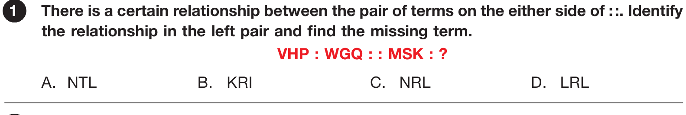
There is a certain relationship between the pair of terms on the either side of : :. Identify the relationship in the left pair and find the missing term.
VHP : WGQ : : MSK : ?
NTL
KRI
NRL
LRL
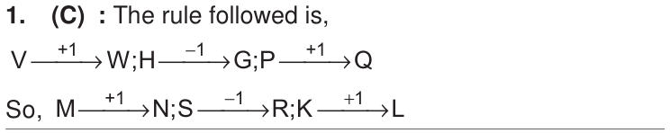
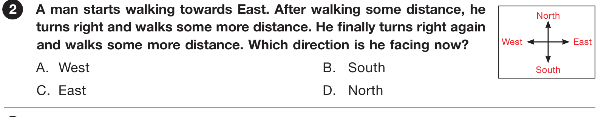
A man starts walking towards East. After walking some distance, he turns right and walks some more distance. He finally turns right again and walks some more distance. Which direction is he facing now?
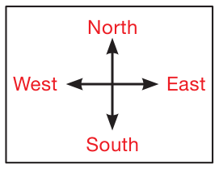
West
South
East
North
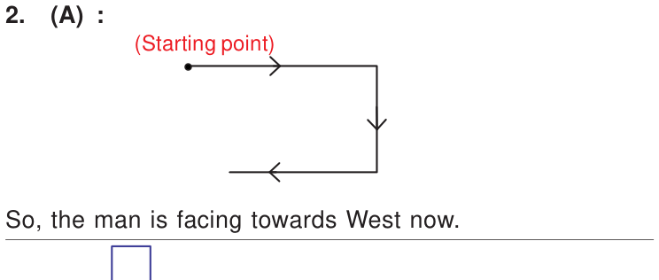
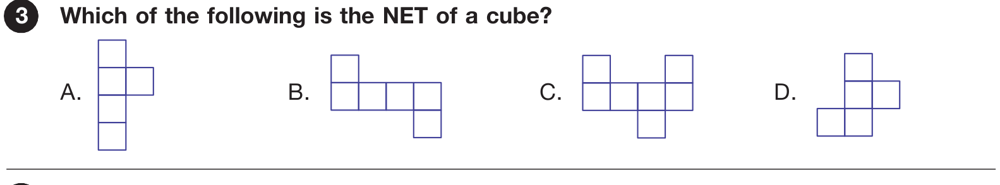
Which of the following is the NET of a cube?
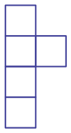
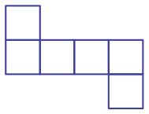
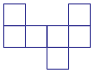
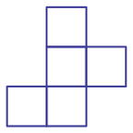
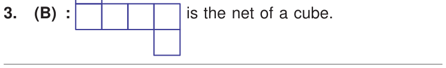
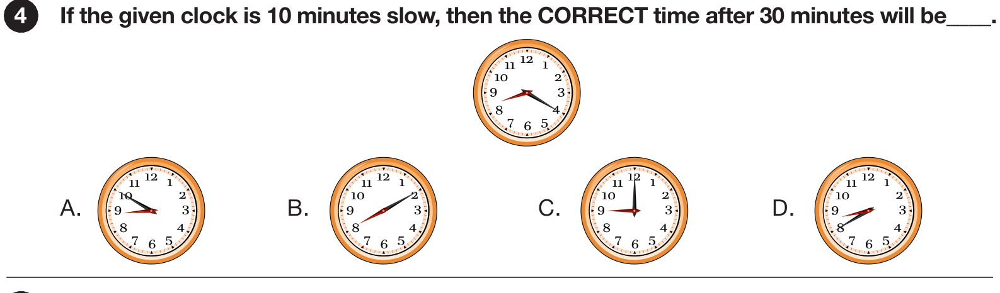
If the given clock is 10 minutes slow, then the CORRECT time after 30 minutes will be____.
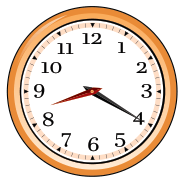
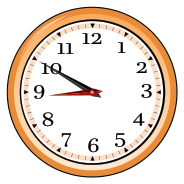
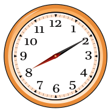
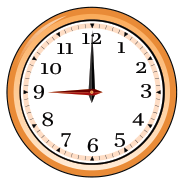
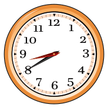
Time shown on the given clock is 8:20.
As, the given clock is 10 minutes slow, so the correct time is 8:30. Hence, 30 minutes after 8:30 is 9:00.
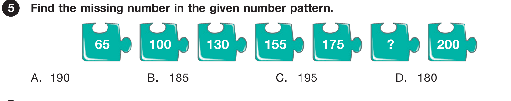
Find the missing number in the given number pattern.
190
185
195
180
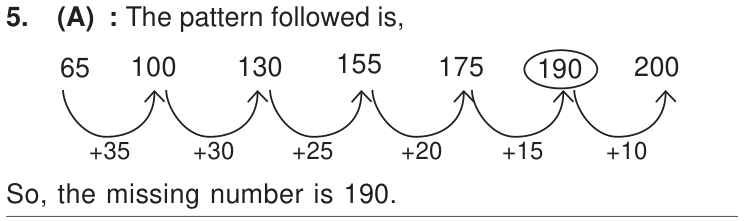
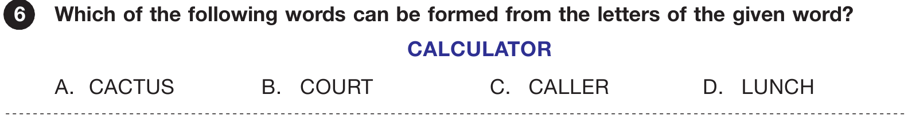
Which of the following words can be formed from the letters of the given word?
CALCULATOR
CACTUS
COURT
CALLER
LUNCH
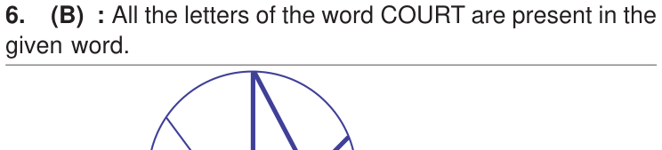
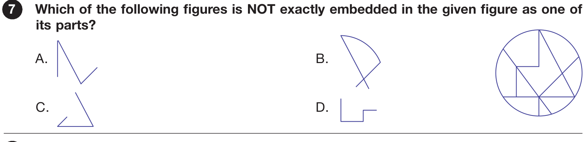
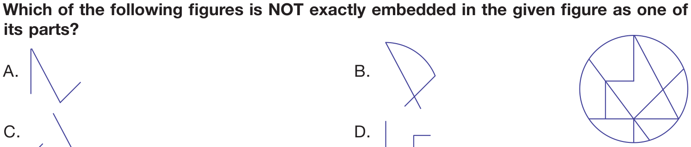
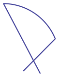
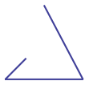
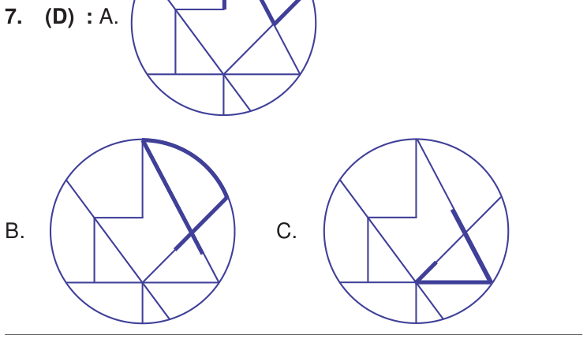
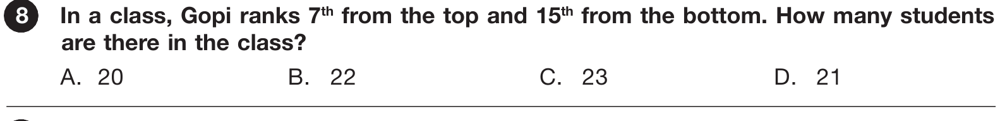
In a class, Gopi ranks 7th from the top and 15th from the bottom. How many students are there in the class?
20
22
23
21
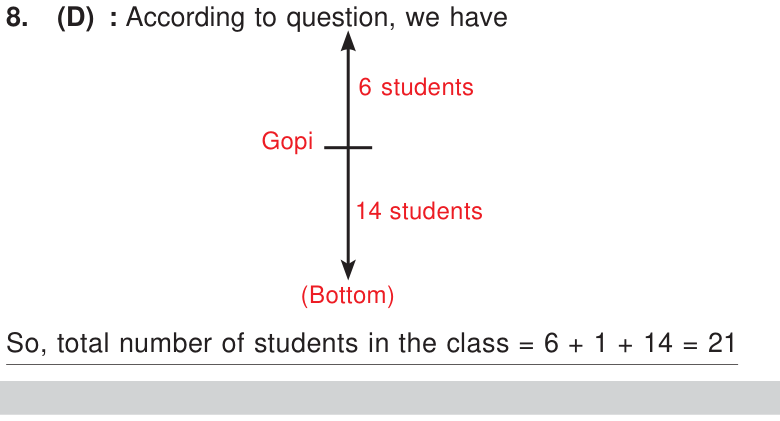
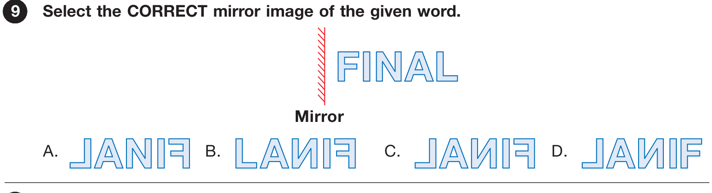
Select the CORRECT mirror image of the given word.
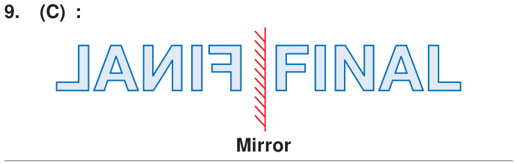
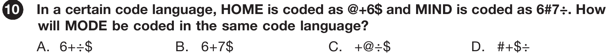
In a certain code language, HOME is coded as @+6$ and MIND is coded as 6#7÷. How will MODE be coded in the same code language?
6+÷$
6+7$
+@÷$
#+$÷
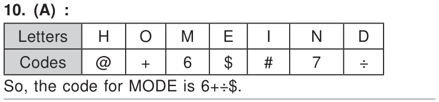
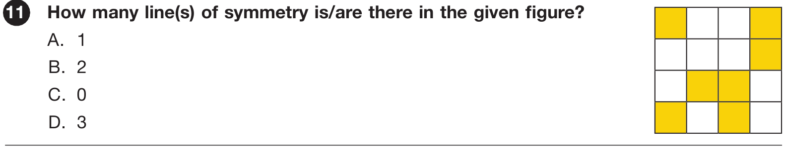
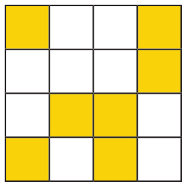
1
2
0
3
There is no line of symmetry in the given figure.
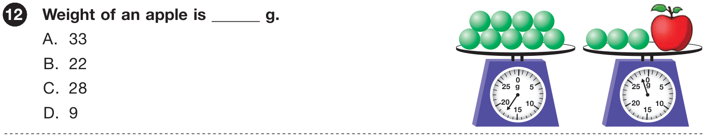
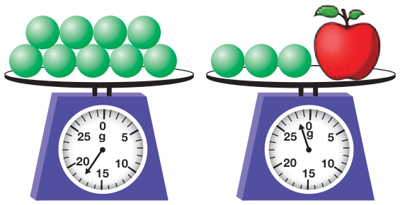
33
22
28
9
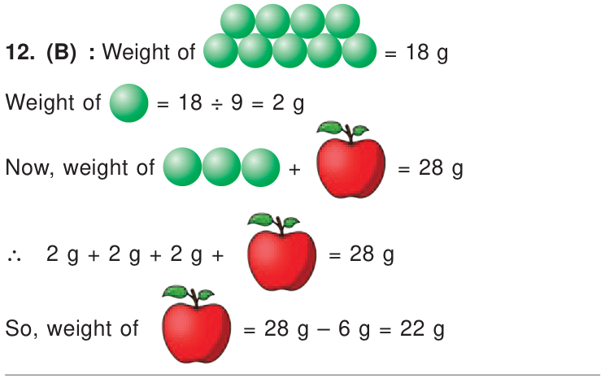
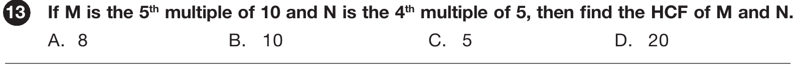
If M is the 5th multiple of 10 and N is the 4th multiple of 5, then find the HCF of M and N.
8
10
5
20
M = 5th multiple of 10 = 5 ×10 = 50
N = 4th multiple of 5 = 4 × 5 = 20
So, HCF of M and N = 10
(14-15) :
Number of pastries made in week 1 = 12 × 50 = 600 Number of pastries made in week 2 = 10 × 50 = 500 Number of pastries made in week 3 = 8 × 50
= 400
Number of pastries made in week 4 = 7 × 50
= 350
Number of pastries made in week 5 = 9 × 50
= 450
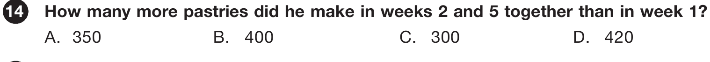
DIRECTIONS (14-15) : The given pictograph shows the number of pastries made by Anand in five weeks. Study the graph carefully and answer the following questions.
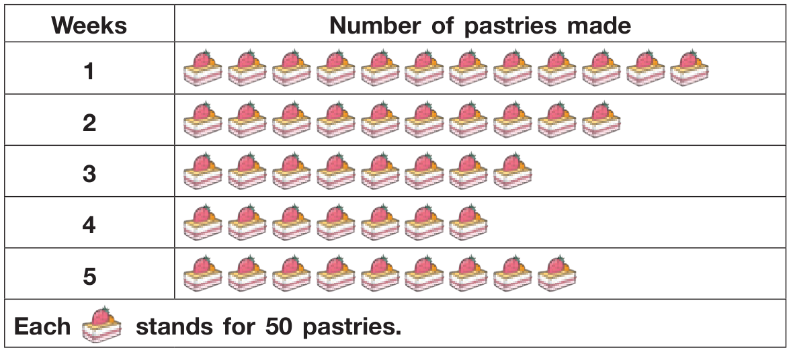
How many more pastries did he make in weeks 2 and 5 together than in week 1?
350
400
300
420
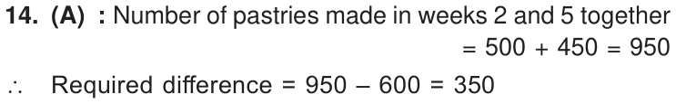
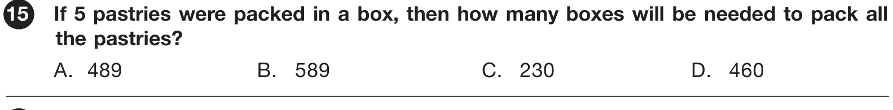
DIRECTIONS (14-15) : The given pictograph shows the number of pastries made by Anand in five weeks. Study the graph carefully and answer the following questions.
If 5 pastries were packed in a box, then how many boxes will be needed to pack all the pastries?
489
589
230
460
Total number of pastries
= 600 + 500 + 400 + 350 + 450 = 2300
Number of pastries can be packed in one box = 5 So, total number of box needed = 2300 ÷ 5 = 460
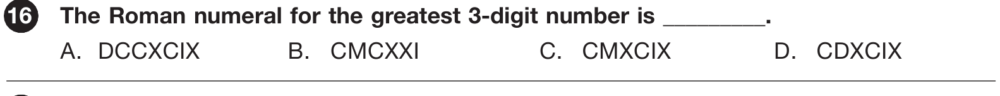
The Roman numeral for the greatest 3-digit number is _________.
DCCXCIX
CMCXXI
CMXCIX
CDXCIX
Greatest 3-digit number = 999 i.e., CMXCIX
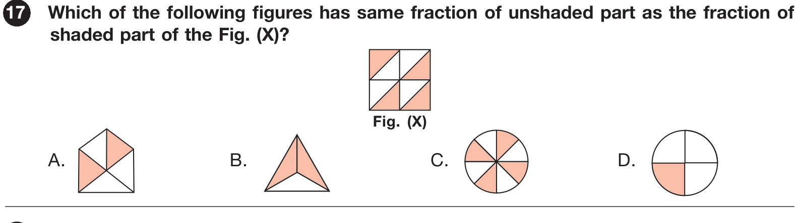
Which of the following figures has same fraction of unshaded part as the fraction of shaded part of the Fig. (X)?
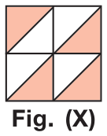
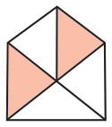
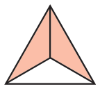
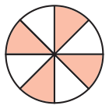
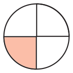
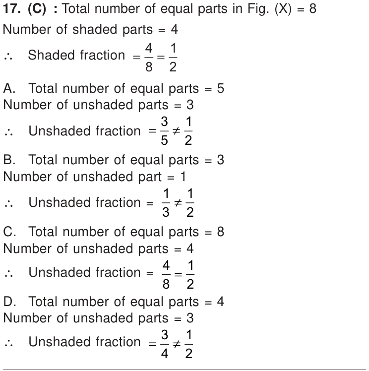
Find the estimated sum of the smallest and greatest 4-digit number that can be formed from the digits 7, 2, 5 and 3 (using each digit only once), when each number rounded off to the nearest hundreds place.
9900
9000
8500
9800
Smallest number formed with the given digits = 2357 Largest number formed with the given digits = 7532
So, 2357 when rounded off to nearest hundreds place becomes 2400 and 7532 when rounded off to nearest hundreds place becomes 7500.
\ Estimated sum = 2400 + 7500 = 9900
Which of the following is an open figure?
Figure in option (C) is an open figure.
The given clock shows the time at which a train started its journey in the evening. After covering 25 minutes of journey, it stops for 15 minutes at the next station. Now, if it takes another 45 minutes to reach its destination, then at what time will it reach the destination?
8 : 40 a.m.
7 : 40 p.m.
8 : 25 p.m.
8 : 40 p.m.
Time at which train started its journey = 7:15 p.m. Time taken to reach next station = 25 minutes.
Time at which train left for destination
= 7:15 p.m. + 25 minutes + 15 minutes = 7: 55 p.m. So, time taken to reach destination
= 7:55 p.m. + 45 minutes = 8: 40 p.m.
A group of 16 friends went for a trip. On a particular day, 3 of them went for rock climbing, 5 of them went for river rafting and rest of the friends went for paragliding. What fraction of the friends went for paragliding?
Jyoti reads 541 pages during her summer reading program. In order to reach her goal of 650 pages, how many more pages does she need to read ?
99
109
119
199
Number of pages to be read = 650
Number of pages already read = 541
So, number of more pages to be read = 650 – 541 = 109
An athlete runs around a rectangular field of length 95 m and breadth 85 m. How much total distance will he cover in 5 rounds of the field?
900 m
1325 m
1600 m
1800 m
Preeti drank 350 mL of litchi juice on Monday, 275 mL of litchi juice on Tuesday and 525 mL of litchi juice on Wednesday. If she had 2500 mL of litchi juice initially, then what quantity of juice is left with her?
1415 mL
1125 mL
1350 mL
1275 mL
Total quantity of juice Preeti had = 2500 mL Quantity of juice she drank on given three days = (350 + 275 + 525) mL = 1150 mL
\ Quantity of juice left with her
= (2500 –1150) mL = 1350 mL
4
5
3
2
All the letters K, I, R, T and I have parallel lines i.e., 5 in number.
A pen manufacturing company made 42656 pens in the month of December. If equal number of pens were made every day, then how many pens were made on each day?
1320
1150
1376
1200
Sakshi bought a large pizza having 16 equal slices. Sakshi and her two friends ate 3 slices each. If she gave 4 slices to her brother, then what fraction of pizza is left with her?
Mohit bought a cloth of length 15 m. If he divided the cloth into 25 equal pieces, then find the length of each piece of cloth.
55 cm
60 cm
75 cm
50 cm
Total length of cloth = 15 m = 1500 cm Number of equal pieces = 25
\ Length of 1 piece = 1500 ÷ 25 = 60 cm
There are two thousand seven hundred fifty nine coconut trees in an orchard. Which of the following numeral shows the number of coconut trees in the orchard?
3579
2579
2759
3759
Two thousand seven hundred fifty nine = 2759 So, there are 2759 coconut trees in the orchard.
Shreya bought 86 kg 475 g sugar and Puneet bought 79 kg 825 g sugar. Who bought less sugar and by how much?
Shreya, 6 kg 650 g
Puneet, 6 kg 650 g
Shreya, 7 kg 350 g
Puneet, 7 kg 350 g
Quantity of sugar bought by Shreya = 86 kg 475 g Quantity of sugar bought by Puneet = 79 kg 825 g
So, Puneet bought (86 kg 475 g – 79 kg 825 g)
= 6 kg 650 g less sugar than Shreya.
(p)-(ii); (q)-(i); (r)-(iii)
(p)-(iii); (q)-(i); (r)-(ii)
(p)-(ii); (q)-(iii); (r)-(i)
(p)-(iii); (q)-(ii); (r)-(i)
Option A
Option B
Option C
Option D
(i) DCCCXIX = 500 +100 + 100 + 100 + 10 + 9
= 819 (True)
(ii) 79523 when rounded off to nearest thousands place becomes 80000. (True)
(iii) New numbers are;
3584, 2597, 6183
So, correct ascending order is, 2597, 3584, 6183 (False)
Option A
Option B
Option C
Option D
A. Perimeter of shaded part of figure P
= 30 × 3 = 90 cm (Correct)
B. Perimeter of shaded part of figure Q = 32 × 4
= 128 cm (Incorrect) C. Number of lines of symmetry of figure Q = 0 (Incorrect)
Three groups of people went for dinner in a restaurant. The bills of their dinner are as shown below.
How much more money was spent by groups M and O together than by group N?
₹ 1150
₹ 1320
₹ 1295
None of these
Vanilla, Chocolate ₹ 950
Chocolate, Strawberry ₹ 1500
Vanilla, Strawberry ₹ 1500
Chocolate, Butterscotch ₹ 1200
(i) Number of Mango cakes baked = 30
Now, 3 times of 30 = 30 × 3 = 90
So, number of Strawberry and Vannila cakes baked
= 50 + 40 = 90
(ii) Total number of Chocolate and Butterscotch flavoured cakes sold = 55 + 45 = 100.
So, total amount spent on gifts = ₹(15 ×100) = ₹1500